Em uma tarde ao vivo, o Dr. Pablo Santos mostra do zero ao acabamento como executar o protocolo inferior no seu consultório, 100% prático e online.
26 de setembro, sábado, 13h às 18h, via Zoom
Faltam para a imersão ao vivo
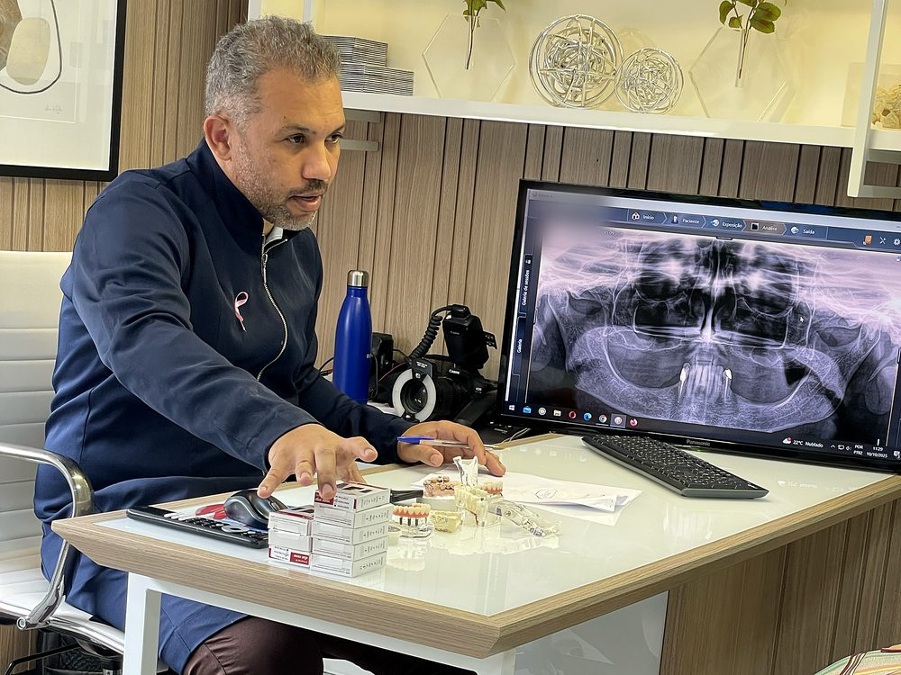
Protocolo, protocolo, protocolo... Isso é o que o Dr. Pablo vê na bancada do laboratório todo dia. Alta demanda, casos chegando, e muitos dentistas ainda encaminhando porque nunca tiveram uma referência prática de como executar. Se você é um deles, essa imersão é pra você.
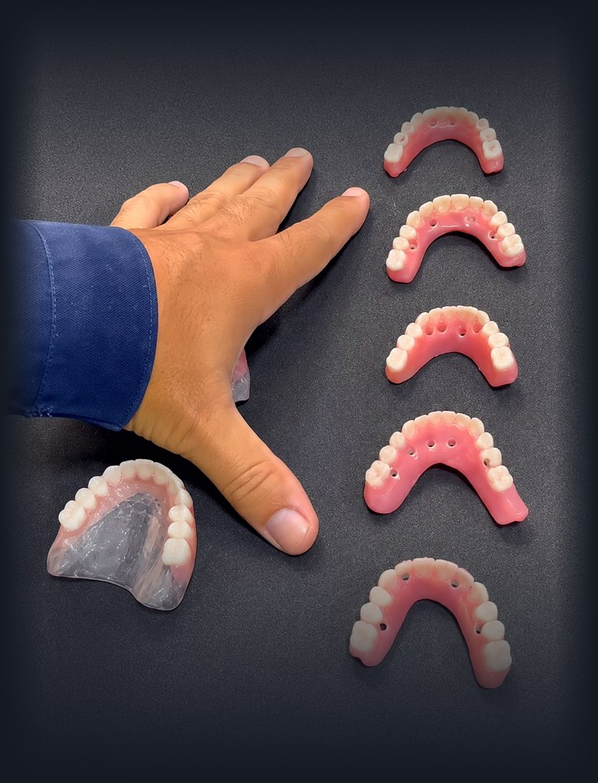
Fotos ilustrativas em modelo odontológico (manequim). Nenhuma etapa é realizada em paciente.
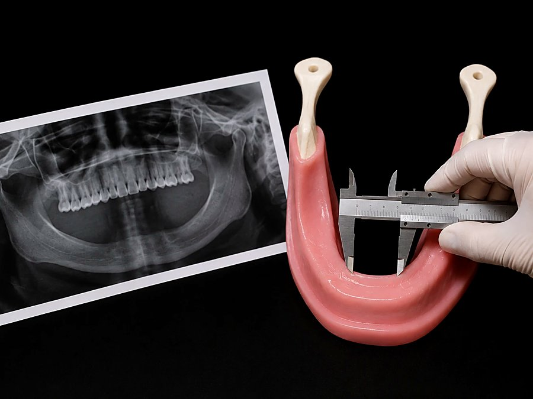
Como ler o caso e decidir a melhor estratégia antes de tocar no paciente.
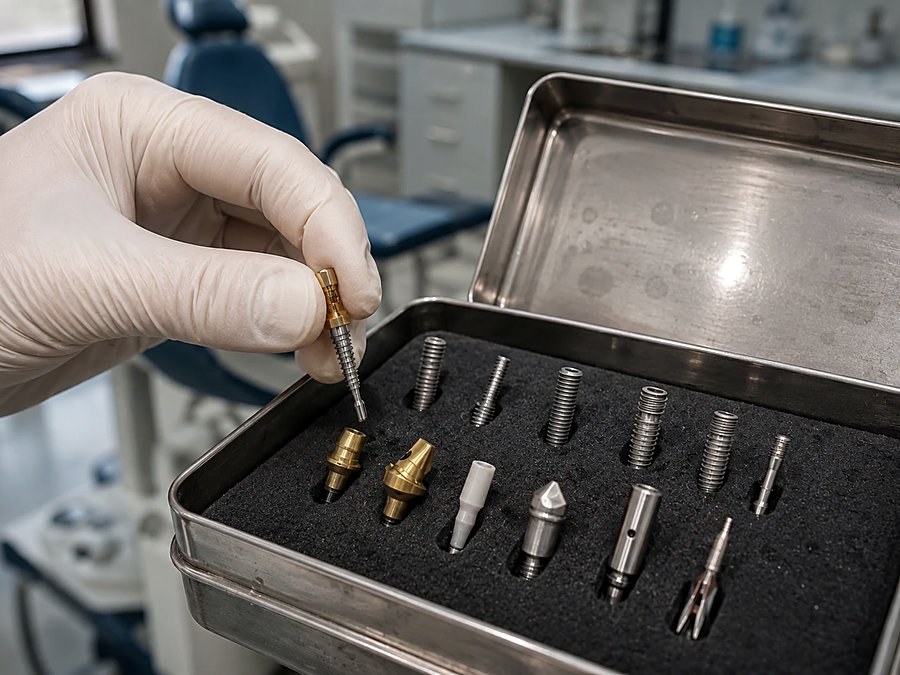
Quais componentes escolher pra cada situação clínica.
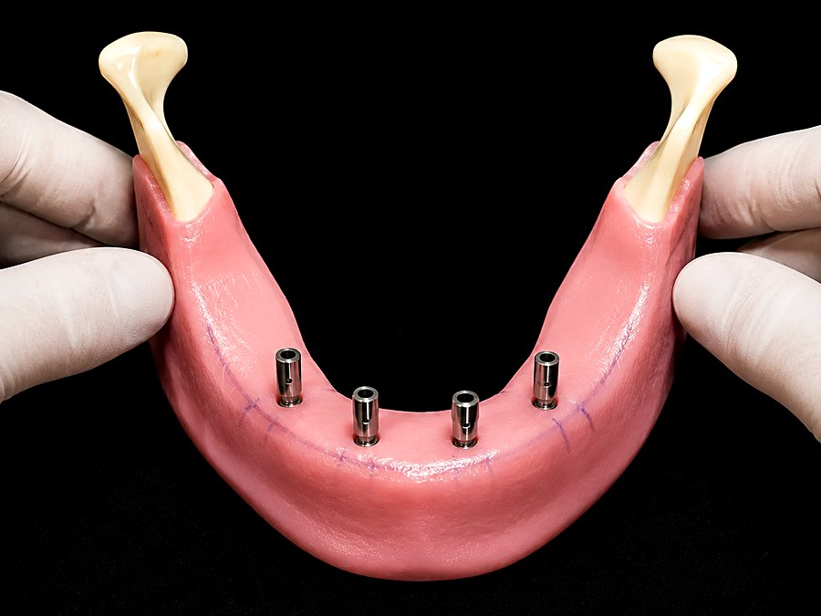
A instalação comentada, passo a passo.
A etapa cirúrgica é demonstrada ao vivo em modelo odontológico (manequim), comentada em tempo real. Não há cirurgia em paciente durante a transmissão.
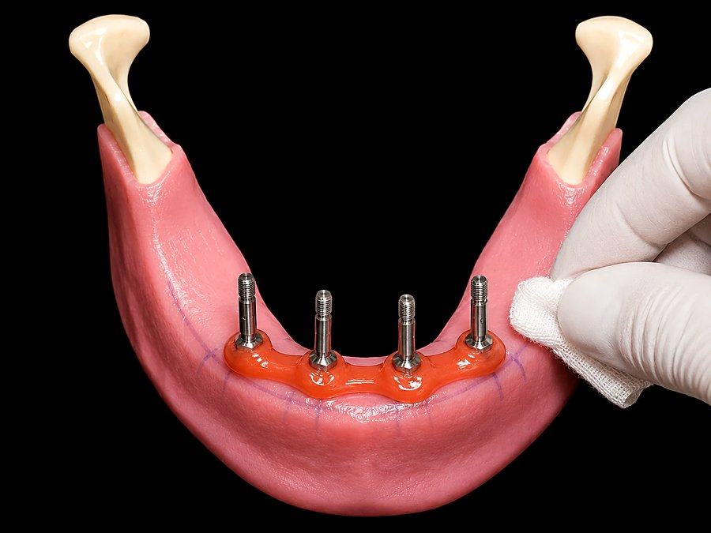
Como capturar a base sem retrabalho depois.
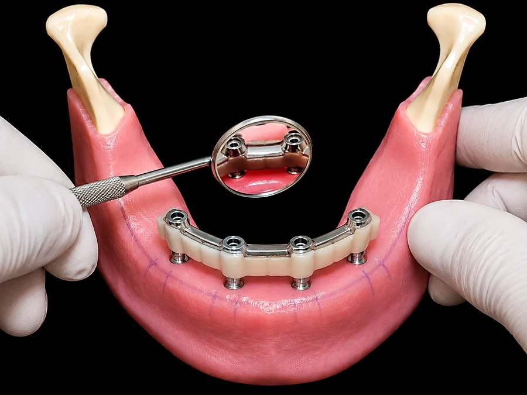
Prova e ajuste da barra antes da entrega final.
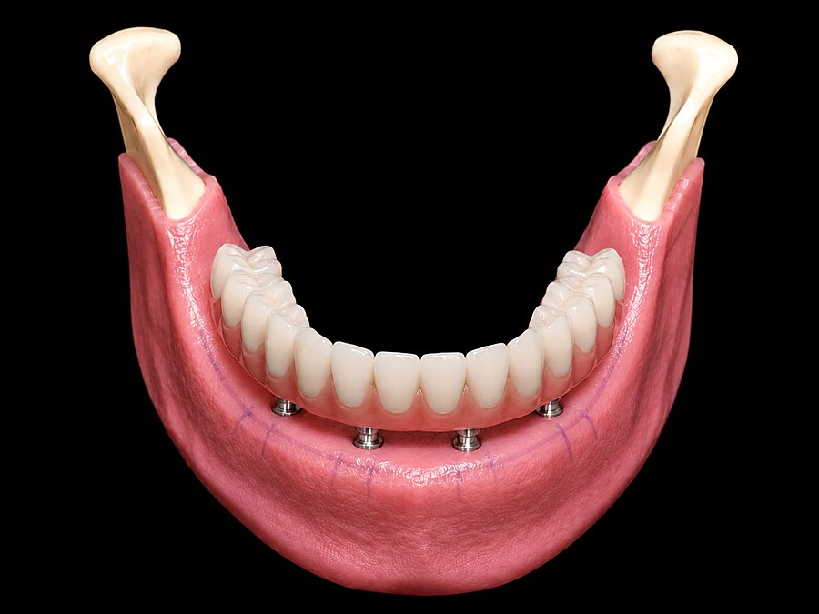
O detalhe que separa um caso entregue de um caso resolvido.
Depoimentos
Ana Célia · aluna de Prótese sobre Implantes
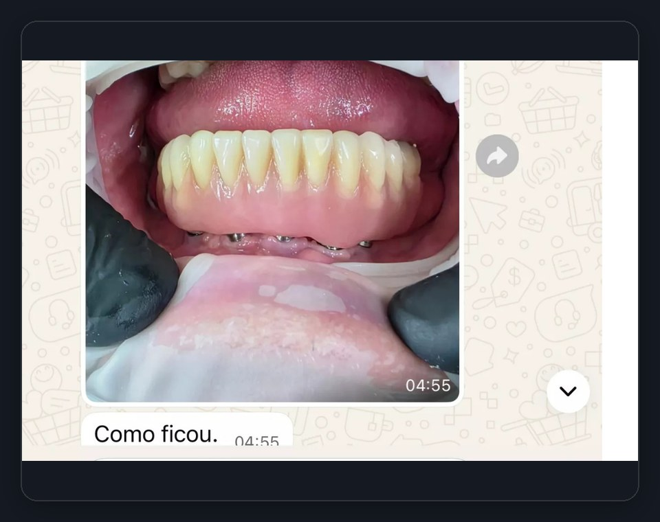
Ederlei · aluno de Prótese sobre Implantes
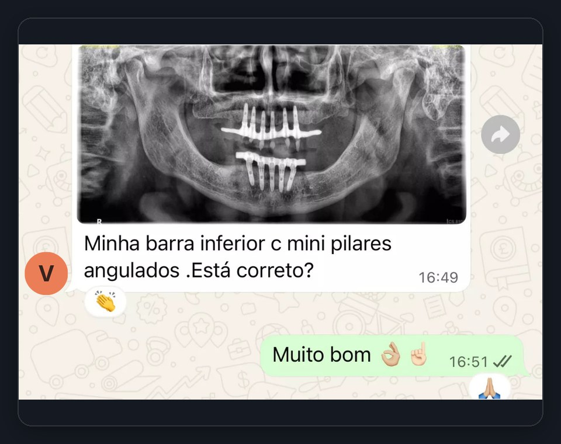
Viviane · aluna de Prótese sobre Implantes
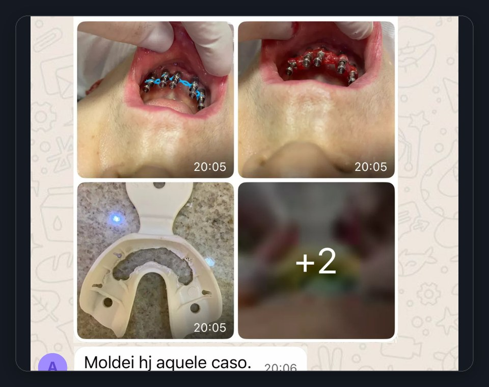
Alessandra · aluna de Prótese sobre Implantes
Imersão ao vivo em 26 de setembro de 2026, 13h às 18h, Brasília, via Zoom
R$37
R$147
Grupo geral com todos os alunos do Ingresso VIP, onde você envia casos reais e tira dúvidas com o Dr. Pablo Santos por 30 dias após a imersão.
Pagamento seguro via PIX ou cartão, nota fiscal pela Hotmart, garantia de 7 dias.
Você tem até 7 dias corridos após a compra para solicitar reembolso integral, sem burocracia, conforme o Código de Defesa do Consumidor (Art. 49) — devolução direto pela Hotmart.
Se o pedido de reembolso for feito depois da realização da imersão ao vivo, o acesso já é considerado utilizado.
Sábado, 26 de setembro de 2026, das 13h às 18h (Brasília).
Não. A etapa cirúrgica é demonstrada ao vivo em modelo odontológico (manequim), comentada passo a passo em tempo real.
Um grupo geral com todos os alunos que compraram o Ingresso VIP, onde você pode enviar casos reais e tirar dúvidas diretamente com o Dr. Pablo Santos por 30 dias após a imersão. O link para entrar aparece na página de confirmação logo após a compra e também chega por e-mail.
Por 12 meses, liberada em até 48h após a transmissão, na área de membros Hotmart. Disponível apenas no Ingresso VIP.
O link de acesso ao Zoom é enviado por e-mail e também fica disponível na área de membros da Hotmart. Para quem tem o Ingresso VIP, o link também é compartilhado no grupo.
PIX e cartão de crédito em checkout seguro.
7 dias após a compra para solicitar reembolso integral, conforme o Código de Defesa do Consumidor.
26 de setembro, 13h às 18h, Zoom, garantia de 7 dias